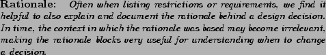

Next: We Appreciate Your Feedback Up: Preface Previous: Getting the Software Contents Index
The following typographic conventions are used throughout this manual.
| Italic | is used for file and command names. It is also used to highlight comments in examples and to define terms the first time they appear in a document. |
| Constant Width | is used in examples to show the text that is generated, and in regular text to show operators, variables, and the output from commands or programs. |
| Constant Slanted | is used for displaying for SIDL source code. We use a separate font to distinguish SIDL code from generated code. |
| Constant Bold | is used to show user's modifications to generated code and in examples to show user's actual input at a terminal. |
| Sans Serif Slanted | is used in examples to show variables for which a context-specific substitution should be made. The variable filename, for example, would be replaced by the actual filename. |
Additionally, we may use specific blocks of text as sidebars to call the readers attention to particular information. Here's one kind.
